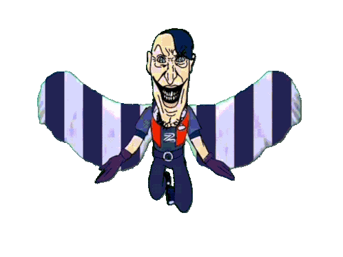
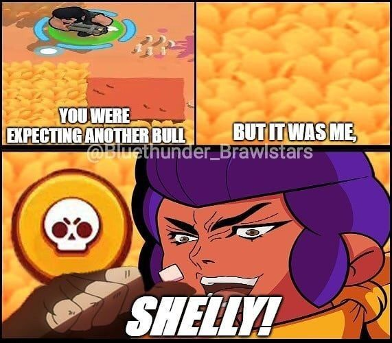

ชื่อ-นามสกุล : คุณชายโรคจิต รอพิชิตสาวพยาบาล
ชื่อเล่น : รุจี้
สาขาวิชา : เทคโนโลยีดิจิทัลและสื่อสารสนเทศ
กลุ่มเรียน : เช้าวันพฤหัสบดี
ผมสนใจการพัฒนาเว็บไซต์แบบครบวงจรเพราะอยากเข้าใจการทำงานของเว็บ จะช่วยให้ผมสามารถสร้างโปรเจกต์ของตัวเองได้ตั้งแต่ต้นจนจบ โดยไม่ต้องพึ่งพาคนอื่นทั้งหมด
ผมคาดหวังว่าจะได้เรียนรู้พื้นฐานและแนวคิดของการพัฒนาเว็บไซต์อย่างเป็นระบบ และหวังว่าจะได้ฝึกฝนการแก้ปัญหาผ่านการทำโปรเจกต์ต่างๆในรายวิชานี้ด้วย
ผมขี้เกียจครับบบบบบบบบบบบบบบบบบบบบบบบบบบบบบบบบบบบบบบบบบบบบบบบบบบบบบบบบบบบบบบบบบบบบบบบบบบบบบ
เว็บไซต์ที่ผมชื่นชอบและได้รับแรงบันดาลใจคือเว็บไซต์ของเกม Brawl Stars จาก Supercell เพราะมีการออกแบบที่สดใส สนุก ตรงกับธีมของเกม และมีการจัดวางองค์ประกอบที่ทำให้ผู้ใช้เข้าใจง่าย
https://supercell.com/en/games/brawlstars/
